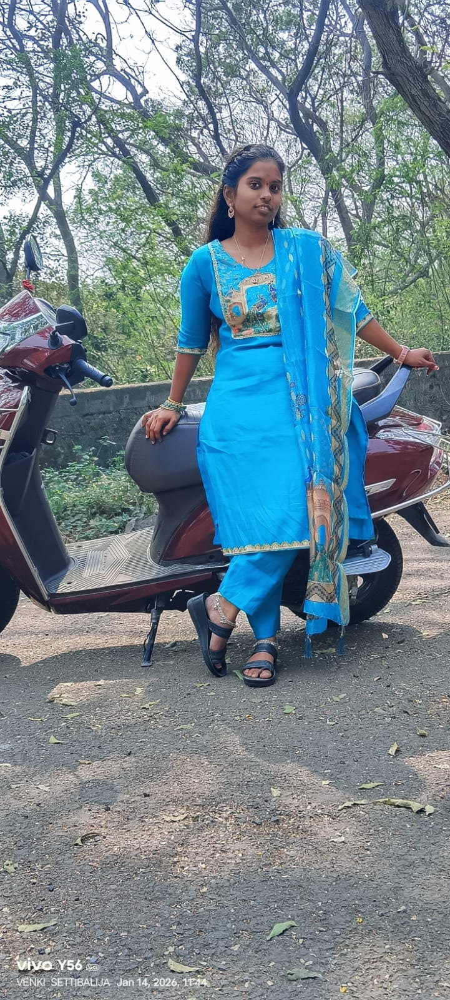

Web Developer
I am Lalitha Namala, a Computer Science student passionate about Web Development, Programming, and Artificial Intelligence. I enjoy learning new technologies and building real-world projects that improve mytechnical skills and creativity. I am a quick learner, a hardworking individual, and always eager to improve my problem-solving abilities. My goal is to become a skilled software developer and contribute to impactful technology projects.
Developed using HTML and CSS Designed a basic travel information website Developed a basic frontend travel website using HTML and CSS with simple database connectivity. The application displays travel destinations and travel-related information through a user-friendly interface.This beginner project helped in understanding webpage design and basic web applicatio development.
Developed using HTML and CSS Created a food ordering frontend webpage. Developed a basic food ordering web application using HTML and CSSwith database connectivity. The application allows users to browseveg, non-veg, desserts, and other food categories, add single or multiple items to the cart, and view the total bill amount with discounts. Customer details and order information are stored in the database for better order management.
SSC
Brilliants English Medium High School Ibrahimpatnam
Diploma in Computer Science And Engineering
MVR college of Engineering Paritala
B.Tech in Artificial Intelligence And Data Science
Lakireddy Balireddy College of Engineering Mylavaram
Email: lalithanamala515@gmail.com
Phone: 8309858778
GitHub: https://github.com/lalithanamala